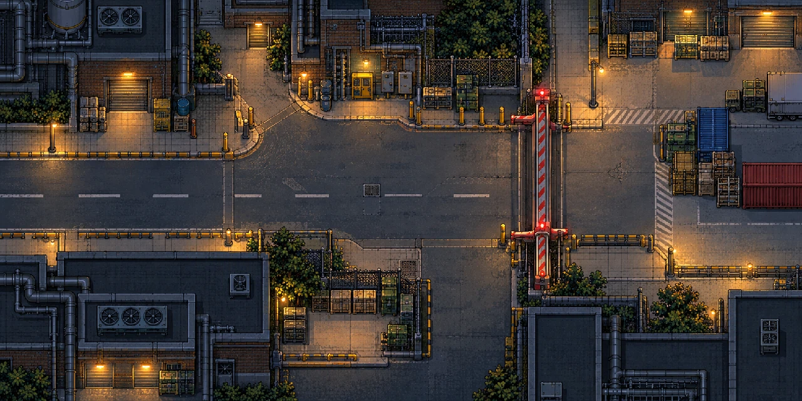
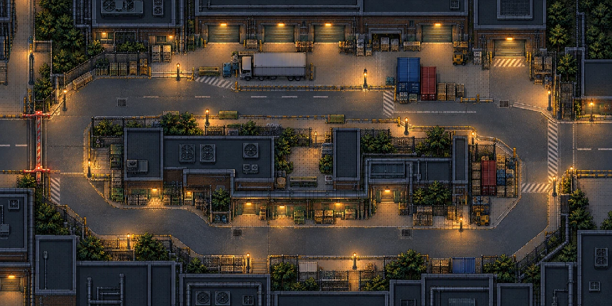
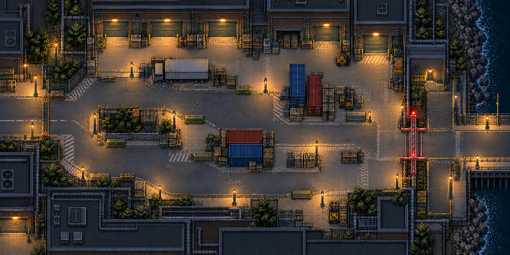
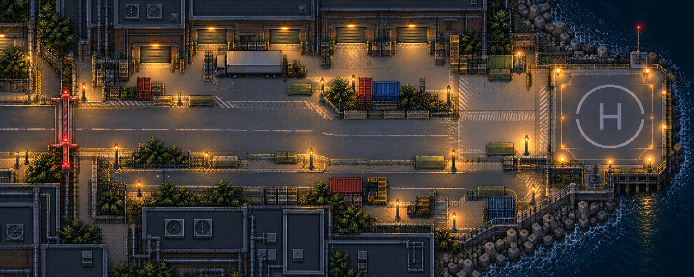

One walkable service district: west entry → Gate A → two connected routes → freight yard/Gate B → eastern extraction. Numbered markers link the composition to the required map assets and the exact reuse audit.
Concept only. These generated concepts are not a Tiled map or production pixel art. The current candidate Tiled map is 40×20 cells; the new route still needs connected native layers, collision, gate footprints and objective markers.
All four images are concept references. They share a visual direction, but their borders and scale are not a measured continuous map. The native Tiled layout must connect these spaces; extraction is arrival, not a third mandatory hold.

Choose a temporary firing position after starting the motor. Staying at the terminal is optional; the open passage is the reason to move onward, carrying remaining ammunition and equipment.
Reuse: power station, three-state gate, asphalt, lamps and selected crates. Author/place: terminal access, gate clearance and rear/flank approaches. Missing facade art stays a request, not a procedural substitute.

The direct loading lane saves travel; the service loop trades time for corners and cover. Pursuers remain in the same World and can follow either route. Neither choice resets combat.
Reuse: asphalt variants, concrete/paving joins and selected blockers. Native proof: actual route lengths, usable corner clearance, reconnecting paths and legible onward destination. Audit truck, fence and container sources before treating them as collision cover.

Choose where to use remaining sentries, light and explosives for the second opening. Wider approaches change the defense geometry; Gate B uses the same gate implementation with its own identity and footprint.
Reuse: gate states, court materials and equipment. Native work: independent activation/crossing markers, a clear outbound lane, cover footprints, warehouse kit and coastal boundary. Keep a path out of the defense position.

After Gate B, the visible destination pulls the player forward under live pursuit. Arrival completes escape; no additional kill-all or compulsory defense timer is introduced.
The helipad is a proposed identity, not a helicopter-system commitment. Select a beacon, evac sign or equivalent landmark through the existing exit pipeline. Seawall/water boundaries, approach readability and destination art require native authoring.
Review limits and native follow-up: phase handoff. Original dimensions and hashes: receipt. Exact phase prompts were not preserved in the recovered session; the overview prompt applies only to the overview.
| Map need | Reuse now | Design handoff still needed | State |
|---|---|---|---|
| West entry / walkable map contract | Editable Tiled world and collision/gameplay layers; source exports remain native. | Expand current 40×20 candidate and add versioned gate/region roles, footprints and connected-lane validation. | Not authored/implemented for escape |
| Power control and Gate A | visual.power_station, visual.gate; existing three-state PNGs. | Place Gate A with dynamic collision, clearance/crossing points, and visual alignment. | Art exists; map/runtime extension missing |
| Exposed loading route | environment.urban.asphalt_01–16, urban detail tiles, sidewalk and existing road layers. | Lay them out with intentional larger patches, readable sightlines and restrained debris. | Selected sources |
| Sheltered service route / reserved checkpoint alcove | environment.material_refinement.straight_v2, convex_v2, concave_v2, paving_v2. | Use proven joins for court/yard edges; identify missing joins from the actual new TMJ. | Limited proof |
| Freight yard / industrial landmarks | Selected runtime storefront layer; design_round_01 facade sources for comparison. | Choose/author a coherent warehouse/service-wall kit and yard landmark; current warehouse files are studies. | Production coverage missing |
| Gate B | Reuse the selected three-state gate art. | Second stable gate ID, independent physical footprint and shared state/art transition. | Art exists; repeated gate not implemented |
| East extraction | texture.world_cues generic 4×2 icon sheet; current exit object. | Readable arrow/evac sign or vehicle/beacon and an authored destination landmark. | Specific art missing |
| Cover and breakables | Authored supply crate/debris and existing prop marker consumer. | Audit car/fence/pallet art, alpha, pivot and footprint before selecting them as blocking gameplay cover. | Crate selected; other states are studies |
| Street lamps and sight | Separated pole sprite, Tiled lamp placements and emission points. | Composition/LOS captures on both lanes; keep partial-source issue visible as BL-093 review. | Assets exist; lighting acceptance open |
| Gate motor audio | Prototype `gate` cue and licensed footsteps/growls in current audio catalog. | Audition existing cue; request a motor start/running/clearance set only if it fails the scene. | Prototype audio only |
Click a numbered marker to jump to its route entry. Full asset paths, IDs, provenance requirements, acceptance checks and backlog ownership are in the detailed asset brief. The original generation prompt and hash are in generation metadata.